SwitchSplat
Learning Discrete Object States from Casually Captured Scenes
1Simon Fraser University 2University of British Columbia 3Wayve Labs 4University of Toronto
*Equal contribution †Equal advising
Abstract
3D Gaussian Splatting has made high-fidelity 3D reconstruction fast and accessible, yet existing representations assume a static world. This assumption breaks down in casual captures, where a user naturally interacts with the environment – opening doors, toggling switches, or moving objects – introducing discrete state changes that no current framework can model. Time-conditioned dynamic methods such as 4DGS conflate when a state was observed with what state the scene is in, limiting them to replaying seen sequences rather than composing arbitrary object configurations. We present SwitchSplat, the first 3DGS representation to address this gap via a base+slot decomposition: a shared static base captures the invariant scene, while each slot independently holds the two binary states (on/off) of one interactable object. Because the assignment of Gaussians to slots is fully differentiable, the model discovers the geometry of each state directly from video, without manual annotation. At inference, the user can freely combine slot states and render the resulting scene from any viewpoint. We validate SwitchSplat on a new casual-capture dataset and show that it outperforms static and dynamic baselines in novel-view synthesis quality, while uniquely supporting rendering of state combinations never seen during capture.
Explore the scenes
Every scene runs live in your browser (WebGPU required). In SwitchSplat scenes, flip each object's state and view any combination from any viewpoint.
SwitchSplat dataset 12 casually captured dual-fisheye scenes
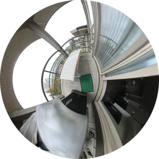
Balcony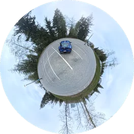
Car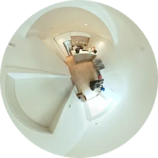
Kitchen 1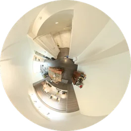
Flat 1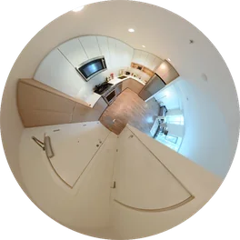
Flat 2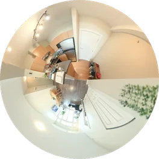
Flat 3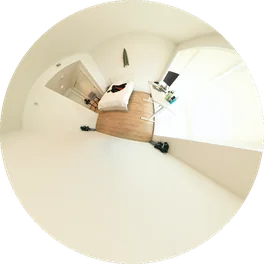
Chair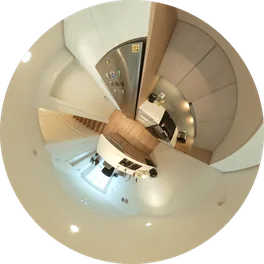
M Kitchen 1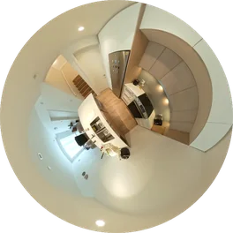
M Kitchen 2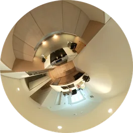
M Kitchen 3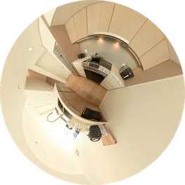
Kitchen 2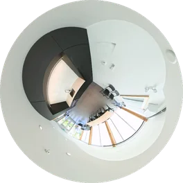
OsloFullCircle scenes 23 static reconstructions from the FullCircle dataset
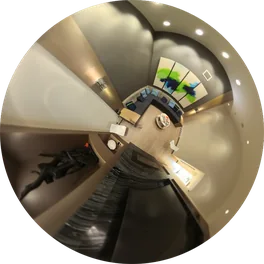
Room 1 · MCMC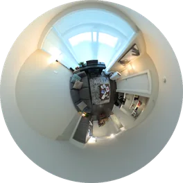
Flat 1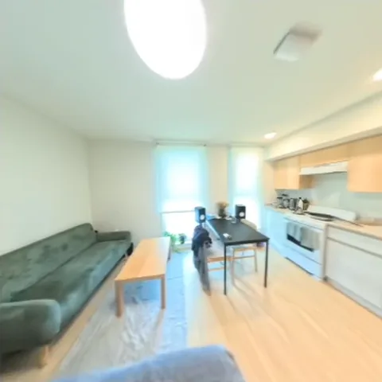
Flat 2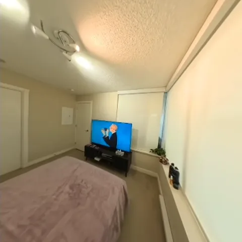
Room 2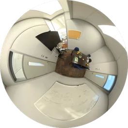
Room 3 · MCMC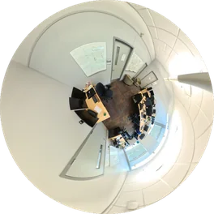
Lab · MCMC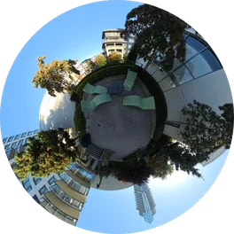
Lounge · MCMC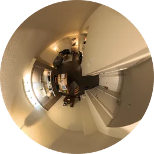
Persons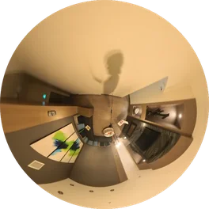
Dark Bedroom 2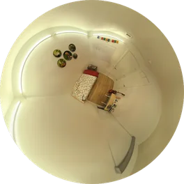
Bedroom 3 · MCMC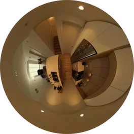
Kitchen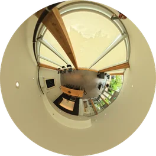
Oslo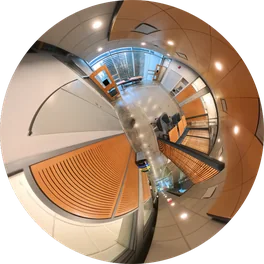
CS · MCMC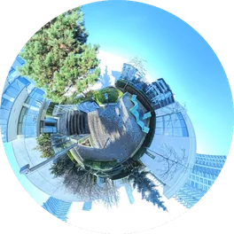
Lounge 2 · MCMC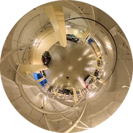
Parking · MCMC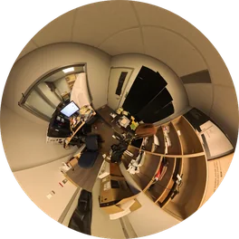
Robot · MCMC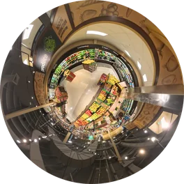
Safeway 1 · MCMC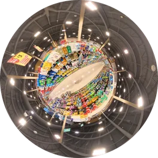
Safeway 2 · MCMC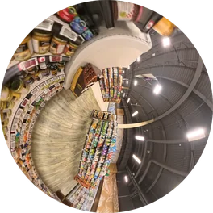
Safeway 3 · MCMC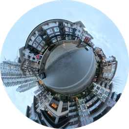
Street 1 · MCMC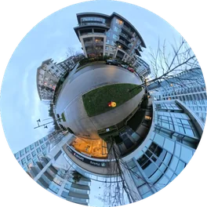
Street 2 · MCMC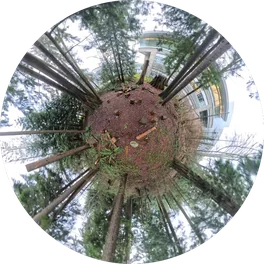
Trees · MCMCBibTeX
@inproceedings{xie2026switchsplat,
title = {SwitchSplat: Learning Discrete Object States from Casually Captured Scenes},
author = {Xie, Yizheng and Foroutan, Yalda and Shramko, George and Rebain, Daniel
and Govindarajan, Shrisudhan and Tagliasacchi, Andrea},
booktitle = {SIGGRAPH Asia 2026 Conference Papers},
year = {2026}
}